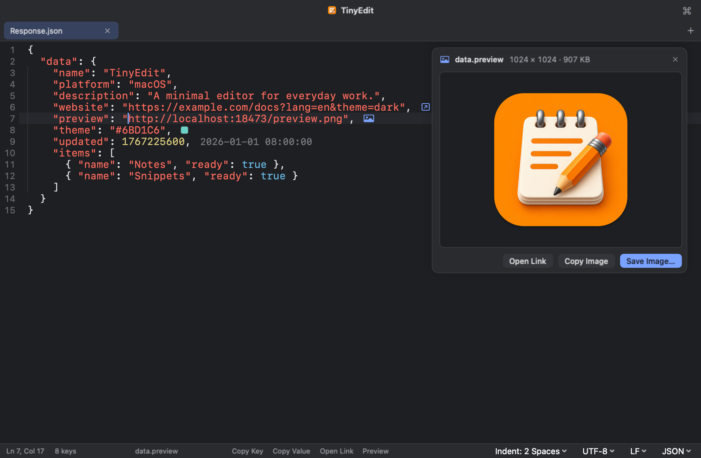
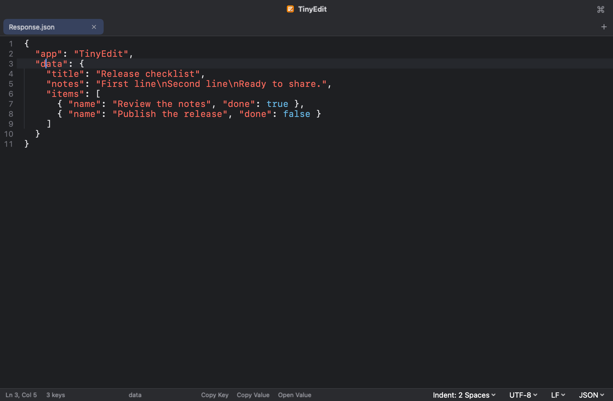
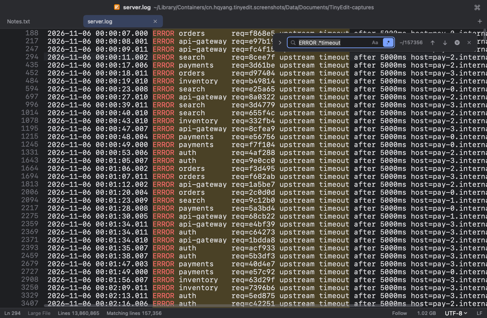
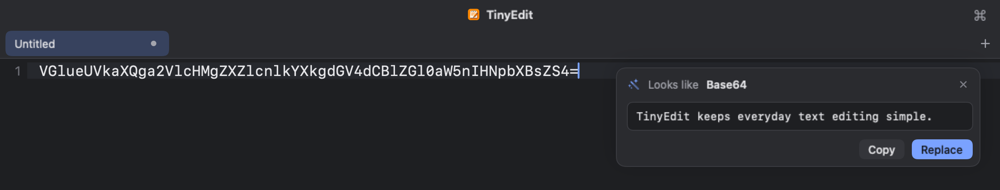
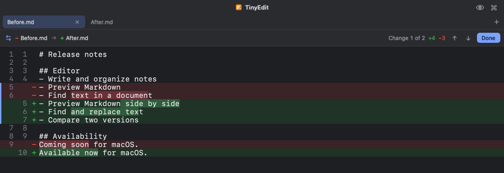
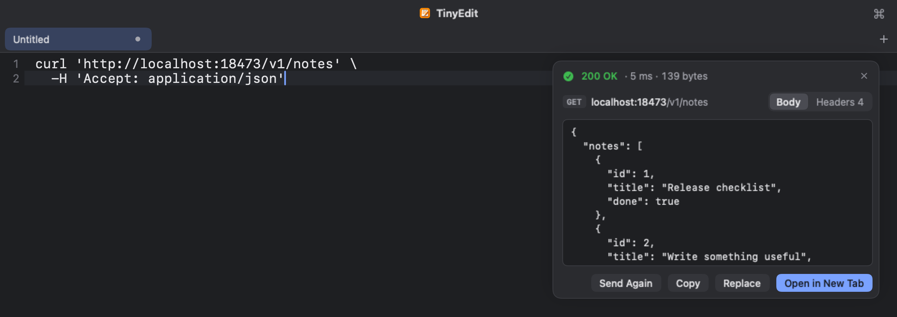
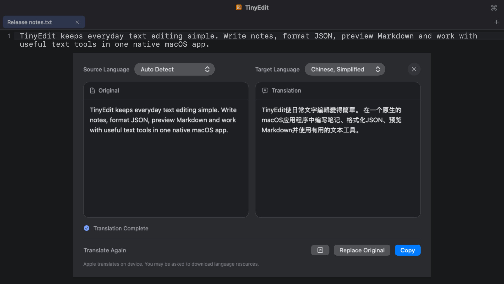
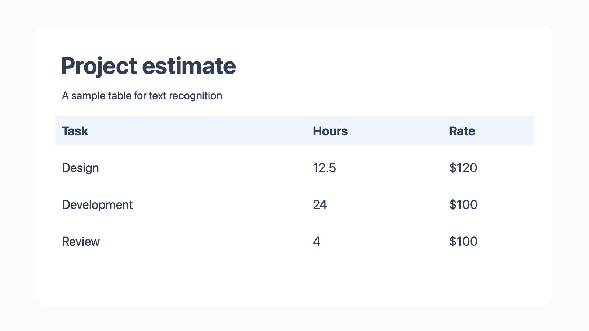
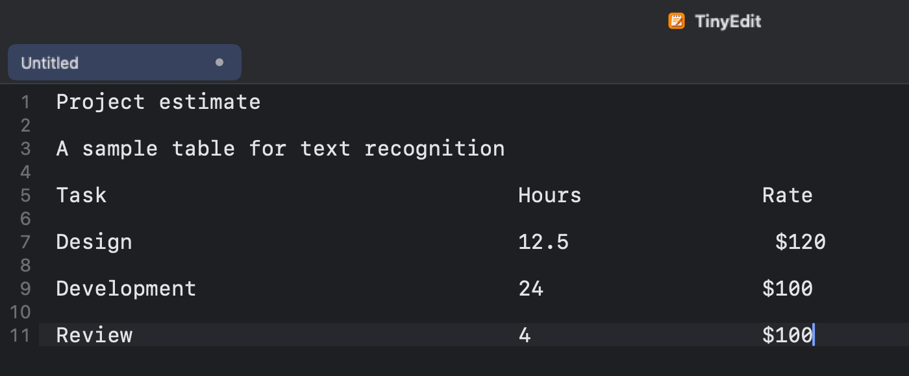

为 macOS 原生打造的
轻量文本编辑器A lightweight text editor,
made natively for macOS
适合日常的笔记、JSON 与 Markdown，几 GB 的日志也能秒开。粘贴进来的 Base64、截图和 curl 命令，也能在编辑器里直接处理。 For everyday notes, JSON and Markdown, and logs of several gigabytes open in an instant. Base64, screenshots and curl commands you paste in are handled right in the editor.
默认是一个干净的编辑窗口，没有多余的面板，打开即可输入。By default, a clean window with nothing in the way: open it and type.
需要时再打开侧边栏浏览文件夹，或并排预览 Markdown。Open the sidebar for a folder, or preview Markdown side by side, when you need them.
36 种语言的语法高亮，按文件名、扩展名或首行的 #! 自动识别。Highlighting for 36 languages, detected from the file name, extension or a #! line.
常用工具Everyday tools
以下画面依照 TinyEdit 的界面绘制，自动轮换，也可点击标签页切换。These views are drawn after TinyEdit's interface. They rotate on their own, or pick one from the tabs.
功能Features
轻点截图可放大查看，左右拖动浏览。Tap a screenshot to see it larger and drag to look around.
以下截图均来自应用本身，界面为英文、深色外观；界面语言与外观可在设置中更改。Screenshots from the app itself, in English with the dark appearance. Both can be changed in Settings.
JSON 工具JSON tools
除格式化、压缩与转义外，TinyEdit 更多地帮助阅读 JSON。格式化保留键的顺序与数字的原始写法。Beyond formatting, minifying and escaping, TinyEdit helps you read JSON. Formatting keeps key order and numbers as written.
- 光标所在的键或值，可拷贝其路径、键与值；字符串拷贝时还原转义。Copy the path, key or value under the caret; strings are copied unescaped.
- 对象、数组或长字符串可在新标签页中单独打开，字符串内嵌的 JSON 会自动格式化。Open an object, array or long string in its own tab; JSON inside a string is formatted.
- 行尾标注时间戳对应的日期、颜色、JWT 的过期时间，以及对象的键数与数组的项数。Line ends show the date of a timestamp, colors, a JWT's expiry, and key and item counts.
- 图片链接与内嵌图片可直接预览、拷贝或保存；URL 的查询参数可展开为 JSON。Preview, copy or save linked and embedded pictures; expand a URL's query into JSON.


打开大文件Large files
几 GB 的日志和数据导出也能直接打开：内容立刻显示，滚动流畅，内存占用不随文件变大。Open multi-gigabyte logs and data exports directly: text appears at once, scrolling stays smooth, and memory use does not grow with the file.
- 全文搜索，支持正则表达式；可以只显示匹配的行，双击一行回到它在文件中的位置。Search the whole file, with regular expressions; show only the matching lines, and double-click one to see it in place.
- 跳到任意行；正在写入的日志可以像
tail -f一样跟随末尾。Jump to any line, and follow a log that is still being written, liketail -f. - 选中几行按回车即可修改，可以撤销；保存前不会改动原文件。Select a few lines and press Return to change them, with undo; the file changes only when you save.
- 选中一行 JSON（如 JSON Lines 日志）在新标签页打开，会自动格式化。Open a line of JSON (from a JSON Lines log, say) in a new tab, and it is formatted.
在 1 GB、1100 万行的日志上实测：打开后 0.04 秒显示内容，1 秒内读完全文，全文搜索约 1 秒，内存约 20 MB。Measured on a 1 GB log of 11 million lines: text in 0.04 s, the whole file read in under a second, a full search in about a second, around 20 MB of memory.

粘贴内容识别Recognizing pasted text
粘贴 Base64、JWT、URL 编码、Unicode 转义或 JSON 字符串后，右上角会询问是否转换，并预览解码结果；可拷贝，也可替换粘贴的原文。Unix 时间戳会显示对应的本地时间。Paste Base64, a JWT, URL encoding, Unicode escapes or a JSON string, and a card in the corner offers to convert it with a preview of the result, to copy or to replace what you pasted. Unix timestamps show their local time.
含终端颜色代码或不可见字符的文本，会提示一键清理。Text carrying terminal color codes or invisible characters gets a one-click cleanup.

未保存的内容自动保留Unsaved text is kept
新建标签页后可直接输入，无需先为文件命名。标签页、未保存的文本、光标与滚动位置在退出后都会保留，下次启动时原样恢复。Start typing in a new tab without naming a file first. Tabs, unsaved text, the caret and the scroll position are kept through a quit and restored at the next launch.
这部分内容与原文件分开存放，原文件只在执行保存时才会改动。未命名的标签页以首行文字作为标题。This copy is stored apart from your files, which change only when you save. Untitled tabs take their title from the first line.
命令行Command line
应用自带 tinyedit 命令，可打开文件或文件夹、跳转到指定行，也可接收管道输入。TinyEdit comes with a tinyedit command that opens files and folders, jumps to a line, and reads piped input.
管道输入以新标签页打开，同样会识别 JSON 并提示格式化。已打开的文件会定位到原有标签页，不会重复打开。Piped text opens as a new tab and gets the same JSON detection as a paste. A file that is already open is selected rather than opened twice.
安装命令可在 设置 ▸ 通用 ▸ 命令行工具 中拷贝。Copy the install command from Settings ▸ General ▸ Command Line Tool.
# 打开文件，不存在时新建open a file, creating it if needed ~/project $ tinyedit notes.md # 在新窗口中打开当前文件夹open this folder in a new window ~/project $ tinyedit . # 跳到第 120 行第 5 列jump to line 120, column 5 ~/project $ tinyedit main.swift:120:5 # 在新标签页中查看命令输出read a command's output in a new tab ~/project $ curl -s localhost:8080/items | tinyedit
文本比较Compare
比较两个标签页，或比较标签页与磁盘上的文件，逐行显示差异并标出改动的字词。编码与换行符的差异会单独提示。Compare two tabs, or a tab with a file on disk. Differences are shown line by line with the changed words marked; encoding and line-ending differences are noted separately.
入口位于标签页右键菜单与命令面板。From the tab context menu or the command palette.

curl 请求curl requests
粘贴从浏览器“复制为 cURL”得到的命令，确认请求后点击 Send。状态码、耗时、响应头与正文显示在同一张卡片中，JSON 自动格式化。Paste a command from the browser's Copy as cURL, review the request and click Send. Status, timing, headers and body appear in one card, with JSON formatted.
请求由应用直接发出，不经过 shell，也不会自动发送。Sent by the app itself, never through a shell, and never without your click.

翻译Translation
原文与译文并排显示，可翻译选区或整篇文档。支持 Apple 系统翻译（在本机运行，需 macOS 15），以及兼容 OpenAI 接口的云端服务或本地模型。The original and the translation side by side, for a selection or the whole document. Use Apple Translation (on device, macOS 15) or an OpenAI-compatible service or local model.

图片文字识别Text from pictures
粘贴截图或拖入图片，识别出的文字会插入光标处，识别过程在本机完成。Paste a screenshot or drop a picture, and the recognized text is inserted at the caret. Recognition runs on your Mac.
在 macOS 26 上，启用表格识别后，表格以制表符分隔，可直接粘贴到表格软件中。On macOS 26, enable table recognition to output tables as tab-separated text, ready for a spreadsheet.


与系统的配合Working with macOS
- 在 Finder 中按空格预览Quick Look in Finder
- Markdown 显示渲染效果，JSON 与代码带语法高亮；大文件按下空格即可看到开头部分。Markdown is shown rendered; JSON and code are highlighted; a large file shows its beginning at once.
- 在 Finder 中新建文本文件New text file from Finder
- 在访达窗口空白处右键，选择“用 TinyEdit 新建文本文件”，存储时文件放进该文件夹（需在设置中启用）。Right-click empty space in a Finder window and choose New Text File with TinyEdit; saving puts the file in that folder (turn it on in Settings).
- 编码Encodings
- 支持 UTF-8、UTF-16 与 GB18030（兼容 GBK、GB2312），保留原有的换行格式。UTF-8, UTF-16 and GB18030 (covering GBK and GB2312), with line endings kept as they were.
- 外部修改提示Changes from other apps
- 文件被其他应用修改或删除时会给出提示；重新载入后，变化的行在行号旁标出。You are told when another app changes or deletes the file; after a reload, changed lines are marked in the gutter.
- 文件夹与多窗口Folders and windows
- 文件夹在独立窗口中打开，侧边栏随磁盘变化刷新；标签页可拖出为新窗口。Folders open in their own windows and the sidebar follows the disk; tabs can be dragged out into new windows.
- 外观与语言Appearance and language
- 浅色、深色或跟随系统；提供简繁中文、英语、日语等八种界面语言。Light, dark or following the system, in eight interface languages.
- 日常编辑Everyday editing
- 多标签页、查找替换（支持正则表达式）、括号配对、缩进参考线，以及按行复制、移动与切换注释。Tabs, find and replace (with regular expressions), bracket matching, indent guides, and line commands for copying, moving and commenting.
- Markdown 预览Markdown preview
- 并排或单独预览，支持表格、代码块、图片和待办列表。Side by side or on its own, with tables, code blocks, pictures and task lists.
下载 TinyEditGet TinyEdit
免费开源，没有内购。需要 macOS 14 及以上，支持 Apple 芯片与 Intel。Free and open source, with no in-app purchases. Requires macOS 14 or later, on Apple silicon or Intel.
打开下载的 DMG，将 TinyEdit 拖入“应用程序”文件夹即可。Open the DMG and drag TinyEdit into Applications.